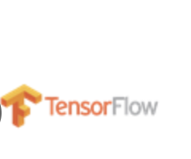

About Me
Hi, I’m Pasumarthi Bhanu Prakash, a highly motivated and quick-learning Computer Science and Engineering student at Lovely Professional University with a strong foundation in programming and a passion for Machine Learning and Data Science. Proven ability to develop and implement ML models, conduct data preprocessing, and visualize insights effectively. Eager to contribute technical skills and problem-solving abilities to challenging projects and make a meaningful impact.
üìû Contact Me: +91 8688546292
üìß Email: pbp.215.4@gmail.com
Skills & Technologies
- Python
- Java
- C++
- HTML
- CSS
- NumPy
- Pandas
- Sci-Kit Learn
- TensorFlow
 - MySQL (Intermediate)
- AWS (Intermediate)
Projects
Facebook Sentiment Analysis - ML (Python)
Introduce the concept of Sentiment Analysis and its ability to extract emotions from text, including emotion patterns (happy, unhappy, and emotionless), which will quantify the sentiment. The project involved data collection from Facebook using the Graph API, followed by preprocessing and training machine learning models, including Naive Bayes and Support Vector Machines to achieve high accuracy in sentiment classification.
AI-Related Job Trends and Salaries Dashboard (Tableau)
Created a responsive dashboard of AI-related jobs and salaries based on Experience, location, Employment type, Average salary in USD, Employee residence. It helps people to acknowledge the reality about jobs and salaries in that particular Domain. This tool empowers job seekers and industry professionals to make informed decisions by providing clear insights into the current job market landscape in the AI domain.
Healthcare Predictive Modeling

By using healthcare datasets to build predictive models for disease diagnosis, patient readmission rates, or treatment outcomes, aiding healthcare providers in decision-making. Developed a user-friendly dashboard for healthcare professionals to visualize predictive analytics results, enhancing decision-making processes and resource allocation in clinical settings.
Certifications & Courses
- Tata Data Visualisation: Empowering Business with Effective Insights Job Simulation on Forage
- British Airways - Data Science Job Simulation on Forage
- BCG - GenAI Job Simulation on Forage
Experience
Navodita Infotech - Machine Learning Intern
October 2024 – November 2024
About: Implemented ML models for classification tasks, improving accuracy. Conducted data Pre-Processing Operations such as feature engineering, normalization, and imputation. Evaluated model Performance by computing confusion matrix metrics such as precision and recall scores.
Tech stacks used: Python, Scikit-learn, Keras, NLTK
Achievements
- Received letter of appreciation from Hon. Shri Narendra Modi (Prime Minister India) for Selection under the Prime Minister's Scholarship Scheme under National Defence Fund.
- Secured 9th rank in the General knowledge competition District wise.
Resume
Add a downloadable resume (PDF format).
üì• Download Resume